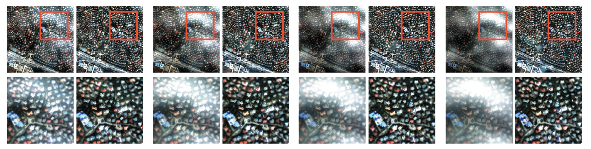
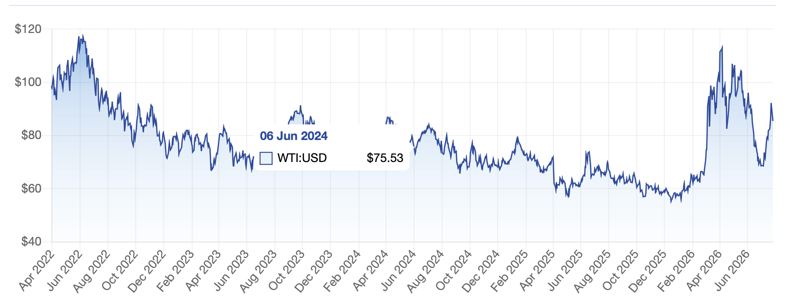
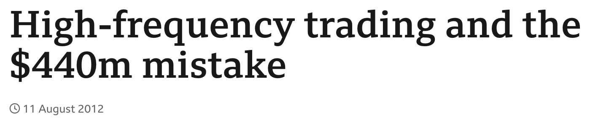
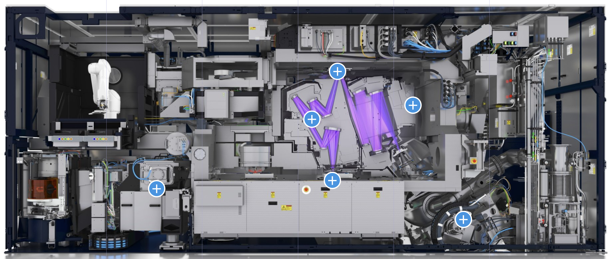
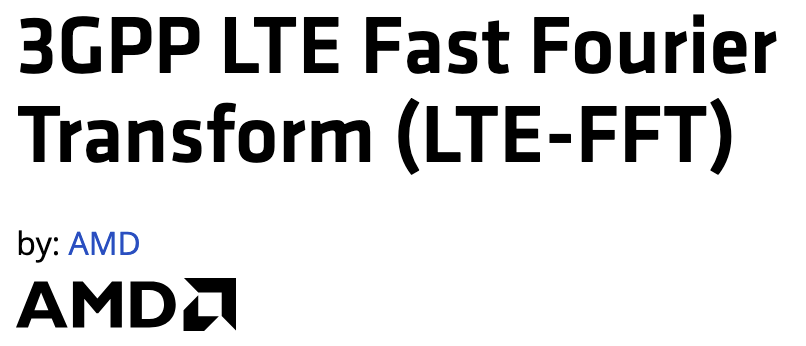
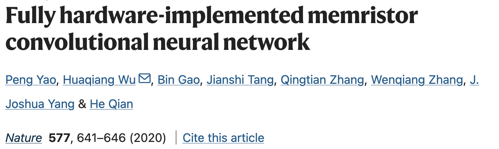
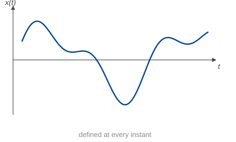
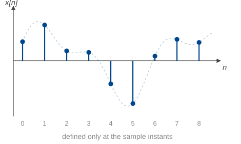

Week 1: Introduction · Semester 2, 2026
Foundations Weeks 1–3
Frequency domain Weeks 4–6
Systems and Laplace Weeks 7–9
Applications Weeks 10–13
Everything is a different way of looking at the same object: a linear, time-invariant system.
Lecture — two hours a week, Monday 15:00-17:00. Typeset notes go up a couple of days before.
Tutorials — two hours, Weeks 2–13. Ten tutorials (two weeks are labs). This is where every quiz happens.
Labs — two practicals on the TIMS hardware, in Weeks 6 and 8 for half the tutorial groups and Weeks 7 and 9 for the other half. Attendance is mandatory.
Times, rooms and which lab weeks apply to you are on your timetable. There is no tutorial in Week 1.
| Component | Weight | When |
|---|---|---|
| Tutorial prework | 4% | Weekly, from Week 2 |
| Quiz 1 | 10% | Week 4 tutorial + two more attempts |
| Quiz 2 | 15% | Week 8 or 9 tutorial + two more attempts |
| Quiz 3 | 15% | Week 12 tutorial + one more attempt |
| Lab 1 milestones | 3% | In your lab |
| Lab 2 milestones | 3% | In your lab |
| Final exam | 50% | Formal exam period |
| Bonus extension quizzes | +5% | after quiz 2 and quiz 3 if you have an HD |
Prework is marked for a genuine attempt, not for being right: 0.5% each, capped at 4%. That is eight of the ten tutorials, so you can miss two without losing anything.
Prework must be handwritten. Take a photo before you hand it in.
Three quizzes, each 30 minutes, in your tutorial.
You need 70% in each quiz to pass the unit.
The bar is high because you get more than one go at it. Needing a second attempt is normal — it is how these are designed to work, not a sign that you are behind.
Quizzes run in tutorials, so your attempts land in the weeks you have a tutorial rather than a lab. One rule covers all of it: your attempts are in your next tutorials.
If your labs are Weeks 6 and 8
If your labs are Weeks 7 and 9
Some groups sit a quiz a week before others. Different groups get different versions, and every group gets the same number of attempts, so nobody is advantaged by the timetable. Your weeks are on your timetable — check them now.
On Canvas, locked-down browser
You get a formula sheet and can use a calculator. The formula sheet is on Canvas.
Me — straight after this lecture, and in office hours (email me to make an appointment: thomas.chaffey@sydney.edu.au).
Your tutors — in tutorials and labs. They see your work every week and they are the fastest route to an answer.
Ed Discussion — ask and answer! Teaching staff will attempt to answer unanswered questions within a day.
Canvas — notes, prework, quiz details, everything administrative.
Ask early! This course builds: a gap in Week 3 is still a gap in Week 11.
What you can expect of us
What we expect of you
A signal carries information: a voltage on a wire, the price of a barrel of oil, the brightness of a pixel, the pressure of the air in this room.
A system takes a signal in and puts a signal out: an amplifier, a filter, a circuit, a trading algorithm, a lens.

Thin cloud removal from satellite imagery. Left of each pair: the observed scene. Right: the recovered surface. The cloud is separated from the ground by filtering.
Lei, M., Li, H., Xu, L., & Shen, H. (2025). Diffusion generation with homomorphic filtering for remote sensing thin cloud removal. Geo-Spatial Information Science, 1–14.

West Texas Intermediate crude, April 2022 to July 2026. One price per trading day.

Knight Capital, 1 August 2012. A trading system went live, ran for 45 minutes, and lost US$440 million — about $10 million a minute.
Knight Capital Group. Headline: BBC News, 11 August 2012.
A 100 Hz square wave through a resonant low-pass filter. Move the cutoff and listen to the harmonics disappear one at a time.

A lithography machine prints circuit patterns onto a wafer that is being moved underneath the optics. The stage has to follow its trajectory to within nanometres while accelerating hard, so the position is measured continuously and fed back to the motors.
Signals — the measured stage position, and the torque commanded to the motors. System — the wafer stage being positioned.
Cutaway of an extreme-ultraviolet lithography system. Image: ASML.

Wi-Fi and 5G do not use the Fourier transform because it is convenient. The standards define the transmitted signal as a sum of complex exponentials — an inverse Fourier transform.
So every phone ships an FFT engine in silicon. In Wi-Fi it runs a 64-point transform every 4 µs: a quarter of a million transforms a second, whenever the radio is on.
LTE-FFT IP core, AMD. Waveform defined in IEEE Std 802.11a-1999 §17.3.5.9 and 3GPP TS 36.211 §6.12.

A neural network built from memristor crossbars. The convolution is not computed by a processor: it happens in the array itself, by Ohm’s law and Kirchhoff’s current law.
Two orders of magnitude more energy-efficient than a GPU.
Yao, P., Wu, H., Gao, B., Tang, J., Zhang, Q., Zhang, W., Yang, J. J., & Qian, H. (2020). Fully hardware-implemented memristor convolutional neural network. Nature, 577, 641–646.
A continuous-time signal has a value at every instant: the air pressure at your ear, the voltage across a capacitor, the current in a circuit.
x(t), \qquad t \in \mathbb{R}

A discrete-time signal has a value only at particular instants: the closing price each day, the samples in an audio file, the pixels in an image.
x[n], \qquad n \in \mathbb{Z}

Of the examples so far: the sound and the wafer stage were continuous, the oil price and the radio samples were discrete, and the satellite image was discrete in two spatial dimensions rather than in time.
Continuous-time signals and linear, time-invariant systems.
Two views of the same system, and the translation between them:
Linear and time-invariant are strong assumptions. They are also the assumptions that make the problem solvable, and they hold well enough to have built most of the twentieth century.
These are the foundations of:
Systems
Communications
Devices
Computation
Signals and systems sits at the intersection of differential equations, linear algebra, complex numbers and trigonometry.
Today’s lecture: the exponential function, Euler’s formula, and the complex plane.